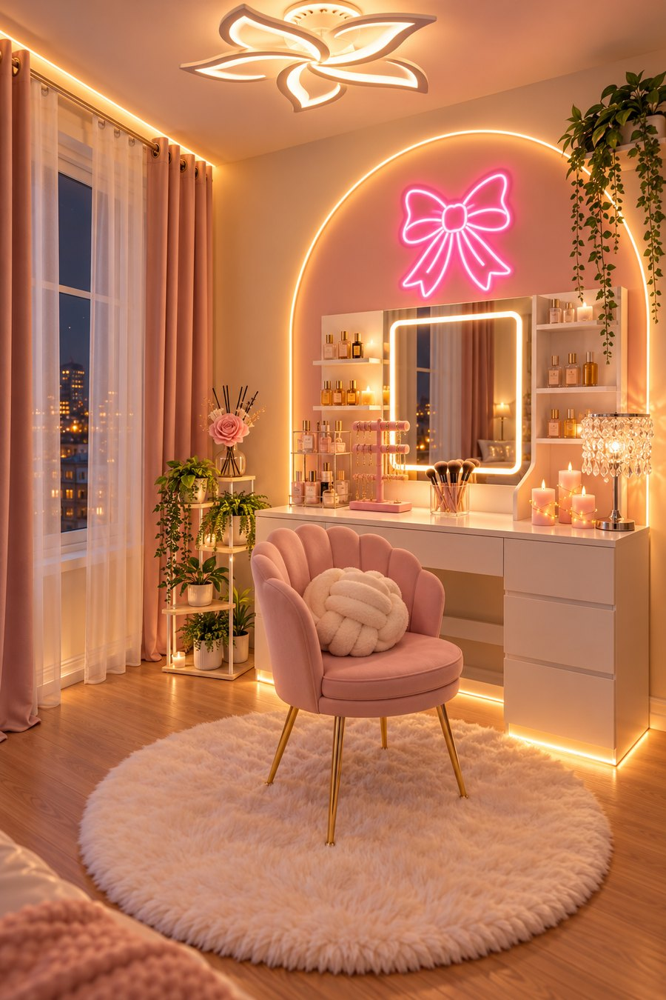
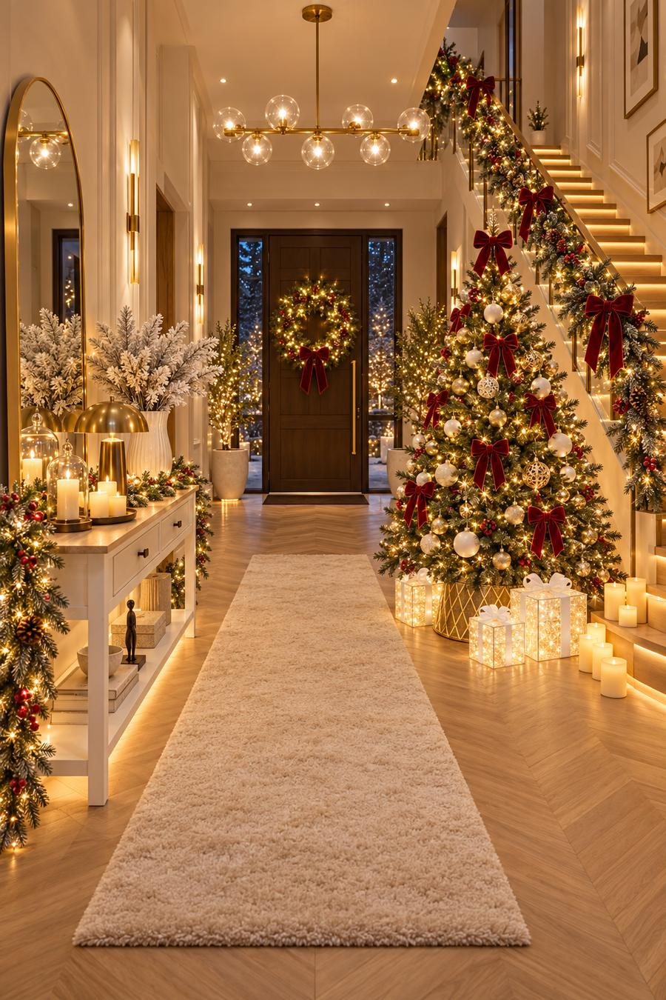
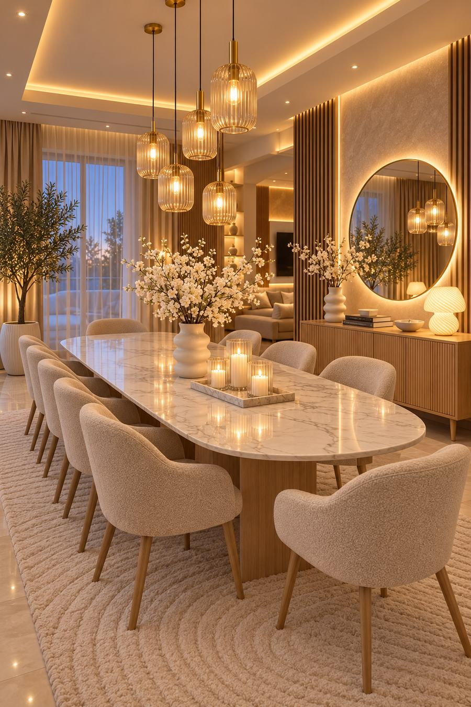
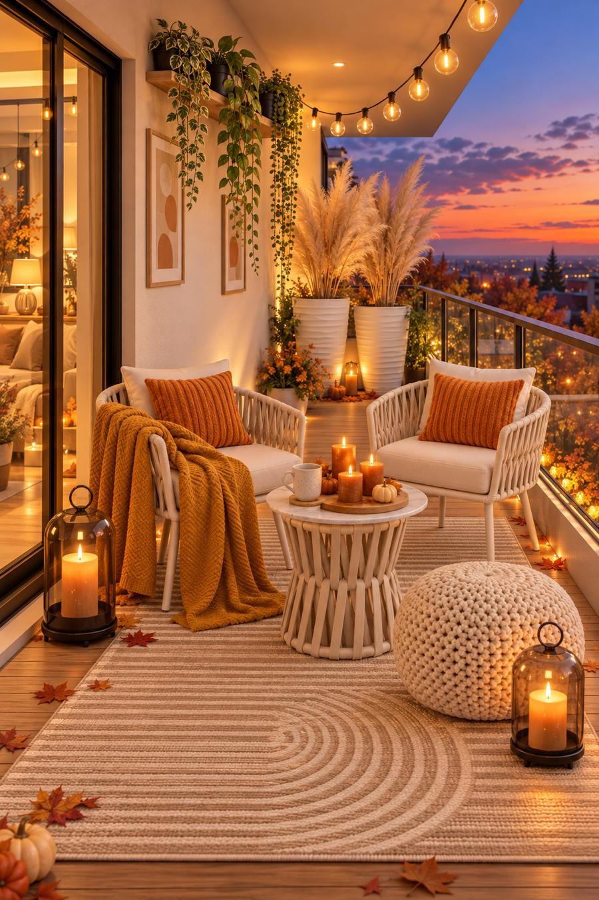
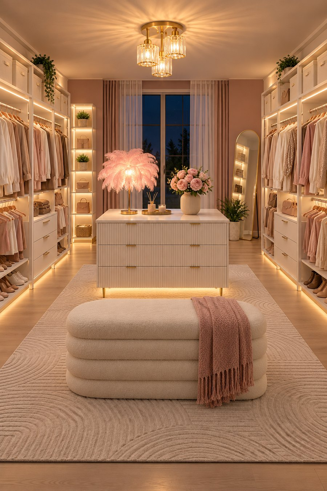
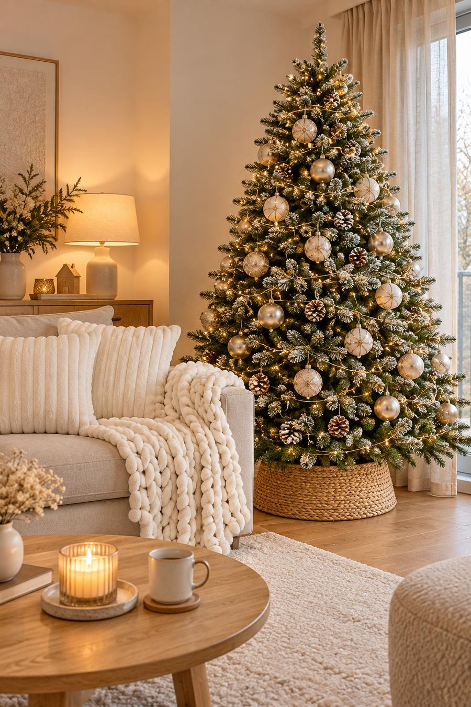
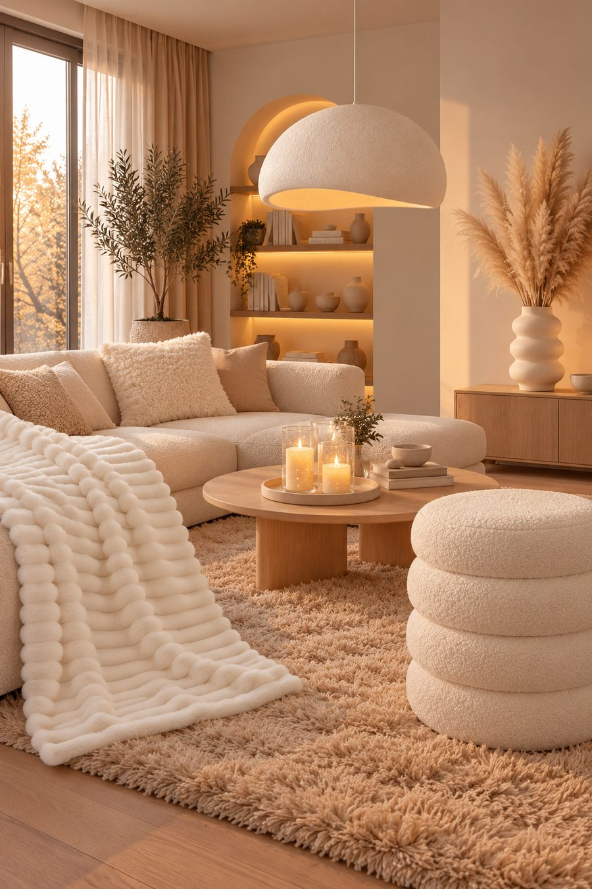

Les looks de l'atelier
Des pièces cosy à recréer chez toi, article par article.

Coin coiffeuse rose et lumineux
Look n°15, 14 articles

Entrée de Noël lumineuse
Look n°14, 17 articles

Salle à manger élégante en marbre et bouclette
Look n°11, 14 articles

Salon cosy vert sauge et doré
Look n°9, 16 articles

Balcon cosy d'automne
Look n°8, 11 articles

Dressing ouvert lumineux et rose poudré
Look n°7, 13 articles

Chambre cosy violette d'hiver
Look n°6, 14 articles

Salon de Noël cosy beige et doré
Look n°2, 6 articles

Salon cosy beige
Look n°1, 6 articles